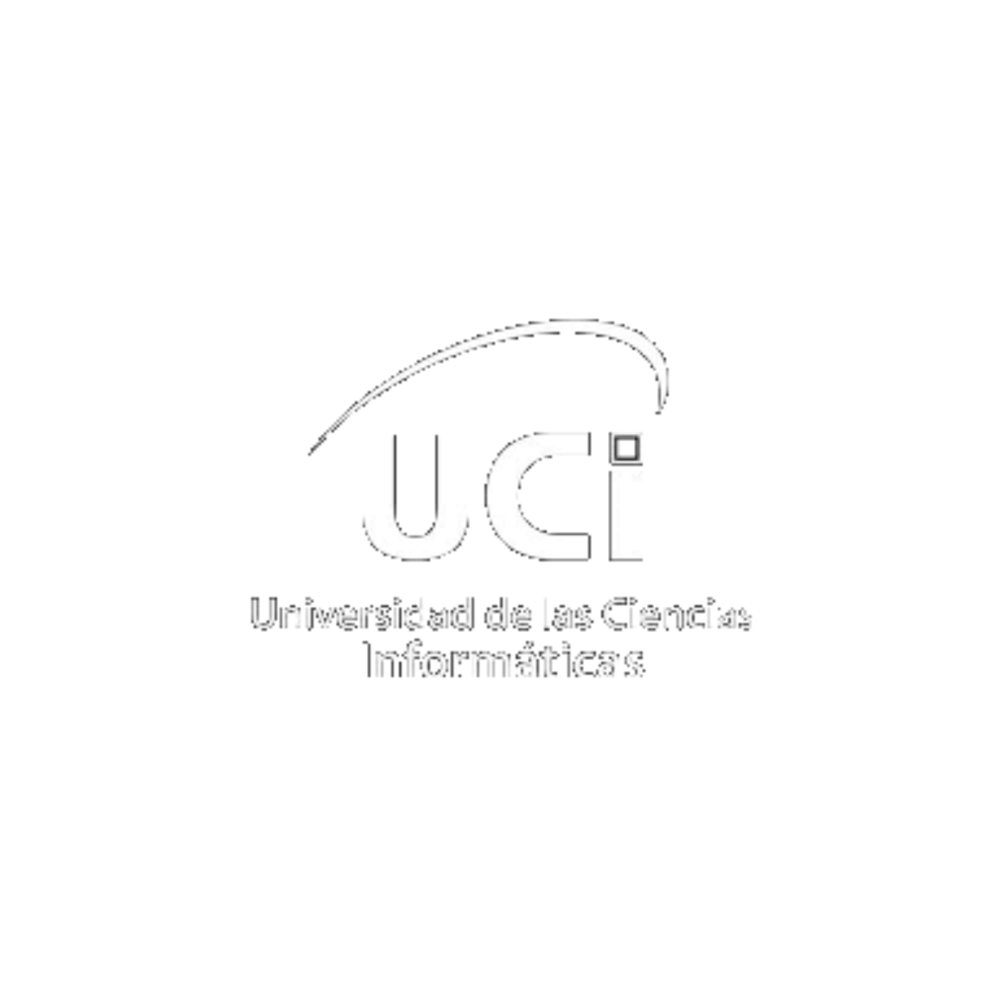

<footer>
    
    <div class="iconscontainer">
        <a href="" class="social-icon"></a>
        <a href="" class="social-icon"></a>
        <a href="" class="social-icon"></a>
        <a href="" class="social-icon"></a>
       
    </div>  
   <span class="copyright">Universidad de las Ciencias Informáticas La Habana, Cuba. Todos los derechos reservados </span>
</footer>
